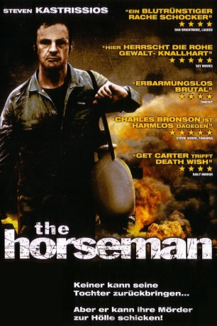

#366 The Horseman - Ein Mann schlägt zurück
Alternativ: The Horseman
 
 IMDB-Wertung: 6.6 / 10
IMDB-Wertung: 6.6 / 10  Metascore: 0
Metascore: 0 
Christian, a divorced father and white collar businessman grieves over the complicated death of his daughter. When a video arrives anonymously in the mail, featuring his daughter heavily intoxicated and mistreated, Christian sets out on a reckless journey to find answers. Fuelled by rage and sorrow, the death toll quickly rises as he uncovers an ugly truth. Along the way he meets Alice, a young runaway not unlike his daughter and a fragile friendship begins to unfold.
Jahr: 2008
Dauer: 96 Minuten
FSK: 18
Land: Australien Studio: Paragon MoviesTonspuren:
Untertitel:
Auflösung: 720p (1280x720) Größe: 4474 MB
Genre: Krimi, Thriller
Regisseur: Steven Kastrissios
Drehbuch: Steven Kastrissios
Soundtrack: Ryan Potter
Darsteller:
- Brad McMurray als Derek
- Christopher Sommers als Pauly
- Evert McQueen als Jim
- Robyn Moore als Irene
- Hannah Levien als Jesse
- Rhye Copeman als Eddy
- Peter Marshall als Christian Forteski
- Caroline Marohasy als Alice
- Jack Henry als Finn
- Steven Tandy als Devlin
 Bryan Probets als Walters
Bryan Probets als Walters- Chris Betts als Hilton
- Damon Gibson als Chuck
- Ron Kelly als Det. Adams
- Greg Jones als Warren
- Mick Glancy als Bernie
- Cameron McKay als Beefy
- Warren Meacham als Richards
Datei: X:\FSK18-2000-2009\Horseman - Ein Mann schlägt zurück, The (2008, FSK18, 1280x720).mkv seit 20.02.2015
Festplatte: FSK18
 Es gibt insgesamt 106 Filme in der Gruppe 'FSK18-2000-2009'
Es gibt insgesamt 106 Filme in der Gruppe 'FSK18-2000-2009'